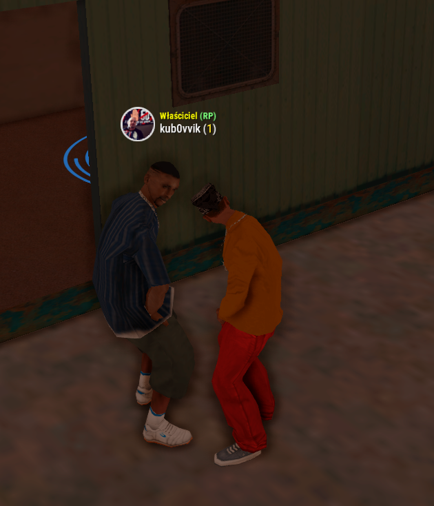
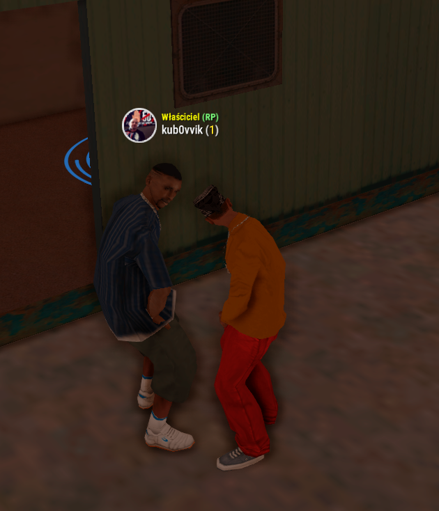

Witaj drogi użytkowniku!
Specjalizuję się w tworzeniu botów Discord oraz skryptów MTA. Wejdź w zakładkę "O mnie", aby dowiedzieć się więcej.
O mnie
Cześć! Nazywam się Marcel, w sieci znany jako Pokebol.
Boty discord
Od kilkunastu miesięcy specjalizuję się w tworzeniu botów Discord, zarówno dla siebie, jak i na zamówienie. Tworzyłem boty z wieloma funkcjami, od ułatwienia moderacji serwera po integrację z popularnymi serwerami, takimi jak MTA czy FiveM. Stworzę dla Ciebie bota, który pomoże w moderacji serwera lub zintegruję Twój serwer Discord z odpowiednimi systemami, abyś mógł np. szybko resetować hasła. Potrafię stworzyć bota dostosowanego do Twoich indywidualnych potrzeb – wystarczy, że napiszesz, jakie funkcje chciałbyś mieć! Jeśli szukasz niezawodnego bota, który pomoże w moderacji Twojego serwera lub zintegruje go z MTA czy FiveM, z chęcią Ci pomogę!
Skrypty MTA
Od kilku miesięcy zajmuję się programowaniem w MTA, tworząc skrypty, które poprawiają jakość rozgrywki oraz zarządzania serwerami. Moje projekty obejmują różnorodne funkcje, od administracyjnych narzędzi, po unikalne mechaniki, które wzbogacają doświadczenia graczy. Jeśli potrzebujesz skryptu MTA Lua, który idealnie dopasuje się do Twoich wymagań – jestem w stanie stworzyć coś, co odpowiada Twojej wizji. Niezależnie od tego, czy chodzi o integrację z innymi systemami, nowe komendy, czy unikalne elementy rozgrywki – wszystko zależy od tego, czego szukasz. Jeśli chcesz dodać coś wyjątkowego na swoim serwerze lub potrzebujesz pomocy w rozwoju swojego projektu, chętnie Ci pomogę i zaplanuję rozwiązanie, które sprawi, że Twój serwer stanie się jeszcze lepszy. Tworzyłem takie porjekty jak MoveRPG(autorski nie wypał) VibeRPG(since) Xplore(autorski też nie wypał przez właściciela) VisionRPG(pseudol)
Kontakt
Discord: pokebolek
Email: devpokebol1@gmail.com
VisionRPGZamówienia
Galeria
Rzucam tutaj fotki botów i skryptów, które robiłem.
 
